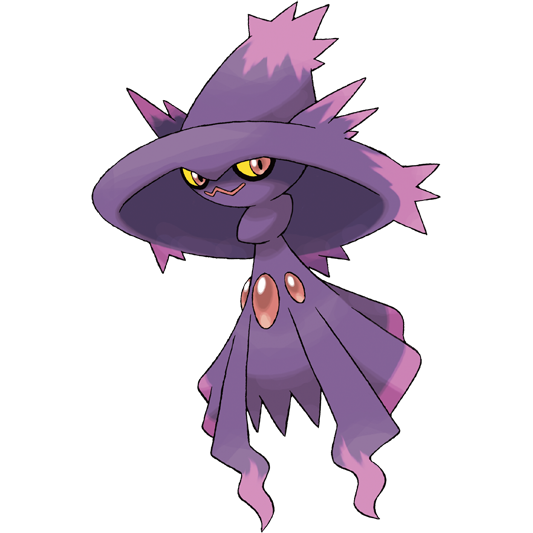

PNG Showcase
Images belonging to the .png (Portable Network Graphic) file type support millions of colors and multiple levels of transparency.
In my experience, PNGs are very popular for editing collages.

The image I chose is a PNG of the official artwork of the pokémon Mismagius.
I decided on this image beacause Mismagius is one of my favorite pokémon that I play with often.
This image was located at: Bulbagarden
This image was located at: Giphy